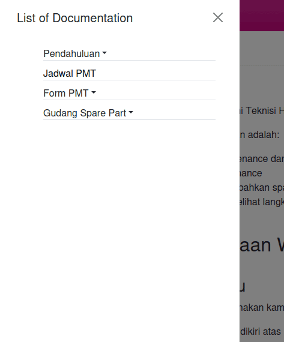

Selamat Datang
Anda sedang berada di website resmi Teknisi Heavenly Blush.
Di website ini, yang bisa anda lakukan adalah:
- Melihat jadwal Preventive Maintenance dari mesin-mesin yang ada di HB.
- Mengisi form Preventive Maintenance
- Melihat, mengambil dan menambahkan spare part
- Membaca instruksi kerja, dan melihat langkah-langkah Troubleshooting mesin
Petunjuk Penggunaan Website Ini
Melihat memilih menu
Untuk memilih menu yang akan digunakan kamu bisa mengikuti langkah-langkah di bawah:
- Tekan tombol menu pada bar dikiri atas
- Akan muncul menu di sisi kiri layar anda, anda bisa memilih menu halaman yang ingin anda gunakan
